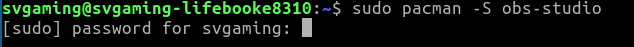
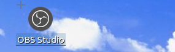
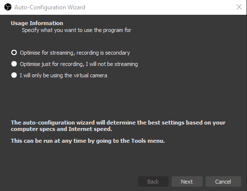
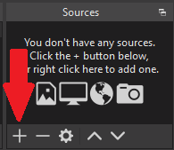
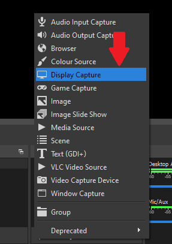
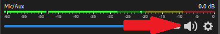

Step 1: Installing OBS studio
To start using OBS studio, you of course have to install it first.
Downloading and installing on Windows:
Go to https://obsproject.com/ and click "Windows" to download the Windows version.
 After the download is complete, run the setup program you just downloaded, and follow the install process.
After the download is complete, run the setup program you just downloaded, and follow the install process. After that, you are done installing! Feel free to move on to the next step.
Downloading and installing on Linux:
Debian and Debian-based distros: (Ubuntu, Mint, etc.) Open the terminal and type "sudo apt update && sudo apt install obs-studio -y", and type your user password.
 Arch or Arch based distros (Manjaro, EndavourOS, etc.)
Arch or Arch based distros (Manjaro, EndavourOS, etc.) Open the terminal and type "sudo pacman -S obs-studio", and type in your user password.
After that, you are done installing! Feel free to move on to the next step.
 Step 2: Setting it up
To start setting OBS up, you have to run OBS.
To run it, just double click it.
 After running OBS, you will be greeted with this screen.
 Click "Optimise just for recording, I will not be streaming", and then click "Next".
After that, this screen will pop up.
 I recommend leaving these options at deafult and just clicking "Next".
I recommend leaving these options at deafult and just clicking "Next". After that, click "Apply settings".
You should now be able to add a source. I recommend adding the "Display Capture" source to capture your display.
You can do that by cilcking the little "+" icon next to the Sources window, clicking "Display Capture", and clicking OK.
  When you complete those steps, you should see this screen.
 I recommend leaving all the settings at deafult, and clicking OK, if you only have 1 monitor.
I recommend leaving all the settings at deafult, and clicking OK, if you only have 1 monitor. If you have more than 1 monitor, you can select which monitor you would like to capture here.
After that, you should be ready for some basic recording!
If you don't want to be heard in your video, press the icon shown in the image below to mute your microfone.
 To start or stop recording, press the "Start Recording" or "Stop Recording" buttons of course.
To view your recordings go to File > Show recordings.
That's about it for this tutorial for now! I may add instrtuctions on how to set up your webcam in OBS later. Bye!